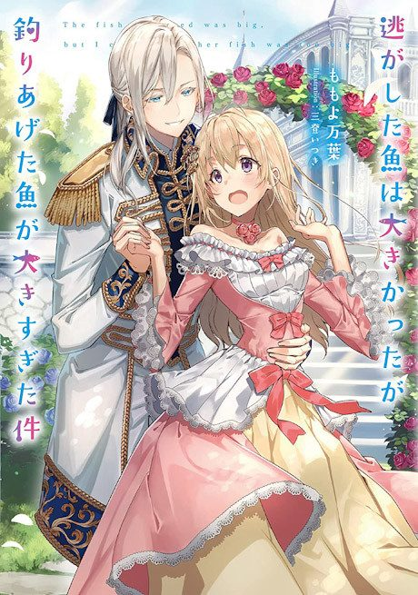

Anime
Anime
Light novelAlways a Catch!
逃がした魚は大きかったが釣りあげた魚が大きすぎた件
The anime takes the story to Unclear.
7.1AniList
—Animeter
12 epEpisodes
Anime finished. Where does the story go next?
StatusNo source yet
We looked for where the anime ends in the light novel but found no source we trust yet. The light novel is still running.
More like Always a Catch!
 Unclear7.7
Unclear7.7
 Manga Ch. 658.0
Manga Ch. 658.0
 Manga Ch. 317.5
Manga Ch. 317.5
 Manga Ch. 517.4
Manga Ch. 517.4
 Manga Ch. 207.2
Manga Ch. 207.2
 Original7.7
Original7.7